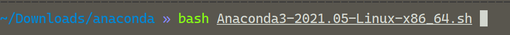
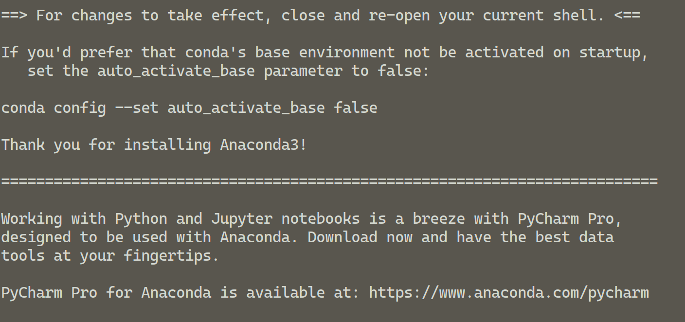
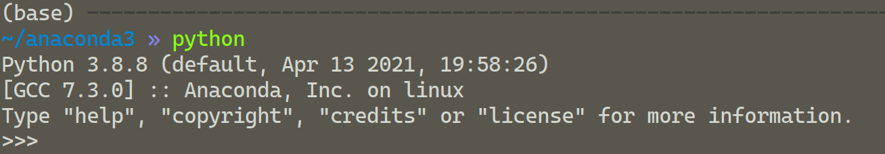
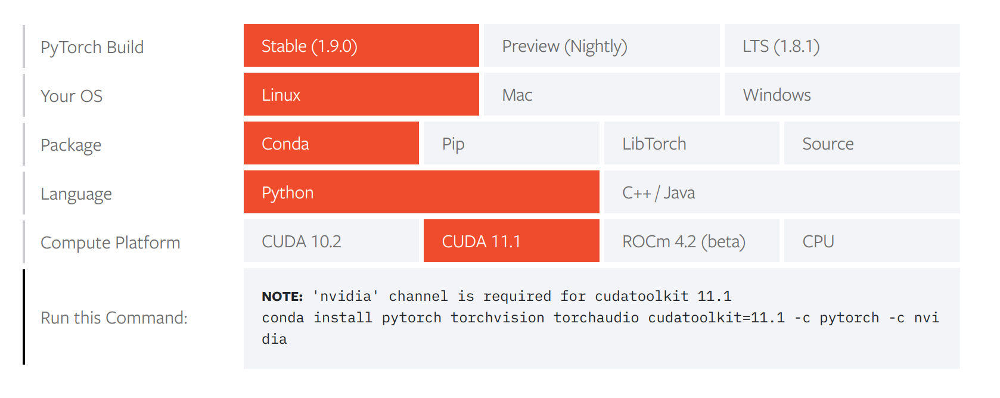
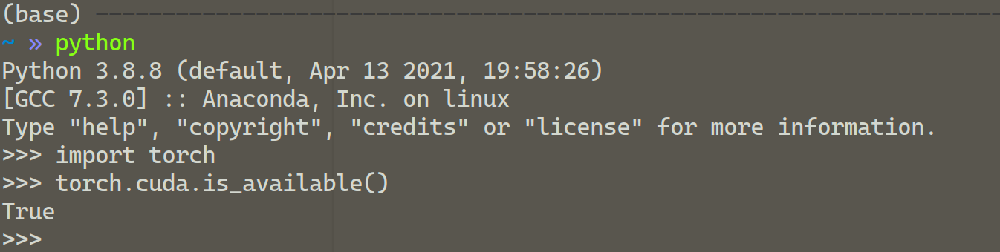

之前已经安装好了 cuda，现在来安装 pytorch，顺便再装一个 anaconda。同样的，本篇是针对 Ubuntu
20.04 LTS 的 pytorch 和 anaconda 安装流程。
安装 anaconda
以前一直没搞清已经安装的 python pip 和 anaconda 有什么区别，会不会有冲突，所以一直没敢装 anaconda，现在好像弄清楚了，它们基本上是两个独立的程序，conda会使用它自己的虚拟环境，所以影响应该不大，那我们就开始吧。
首先到官网下载安装包，可以用 sha256sum 检查一下。
然后到安装路径运行它：

然后有一些协议啊步骤啊，阅读同意就行。有一个初始化选项推荐 yes。
出现这个就是安装完成辣：

看看 python，发现已经是 anaconda 的了。

改一下清华源：
1 | conda config --add channels https://mirrors.tuna.tsinghua.edu.cn/anaconda/pkgs/free/ |
$ anaconda-navigator 可以打开 anaconda 的 gui 界面，不过好像窗口大小一直有问题。
$ conda update conda 可以进行更新。
安装 pytorch
到 pytorch 官网 直接选择自己的电脑版本，然后输入他给的命令行就行了。

出现这个就是开始下载了，有一点慢：

把里面所有东西都下好了基本上就完成了。我们可以在 Python 里面直接使用 torch 包辣：

也可以通过 torch.cuda.is_available() 看到我们的 cuda 是否可用。
安装 TensorFlow
既然装了 pytorch 也把 TensorFlow 装一下（其实是mit和andrew的课都用的 TensorFlow）。
首先新建一个 conda 的虚拟环境：
1 | conda create -n tf-gpu python=3.8.8 # 初始装一个python |
这里正好了解一下 conda 对虚拟环境的管理，其实就是对所有包的管理。新建一个虚拟环境就是创一个什么包都没有的新环境（当然你可以初始安装包），达到不同工作环境间的隔离。
1 | conda activate tf-gpu # 转移到这个环境 |
然后在新环境中安装 tensorflow 中即可，还需要一些常用的包 numpy, pandas, matplotlib等。
tensorflow 已经出到第2版了，和第一版还是有一些区别的。tensorflow1 是区分 CPU 和 GPU 的，分别是 tensorflow 和 tensorflow-gpu，tensorflow2 同时支持 CPU 和 GPU。
在安装时不显式指定版本即 tensorflow=x.x 默认安装最新版，也即 2.x 版不区分是否带 -gpu。
其实用 conda 也可以直接安装：
1 | conda install tensorflow |
但是官方建议用 pip 安装（但我不知道为啥）：
1 | pip install tensorflow |
这里其实又涉及到 conda 和 pip 的区别，默认 pip 是会调用 /bin/... 下的程序，这个 pip 下载的不归 conda 管理。但是 conda 又是包含 pip 的，即可以 $ conda install pip，也是在新环境中装 python 时自带的，这个 pip 本身就归 conda 管，执行的是 ~/anaconda/bin/... 下的程序（因为它在我们的环境变量 $PATH 中，优先找到它）。并且这个 pip 所下载的包也是归 conda 管理的，可以在 conda list 中看到。
至此大概将 conda 和 pip 的区别搞清楚了，不过是我的个人理解，可能有误，欢迎也感谢指正。
最后 check 一下：

我的 zsh 可以显示当前的环境，是我们创建的 tf-gpu，TensorFlow 可以被成功 import，查看到版本，以及可以在 cuda下工作。